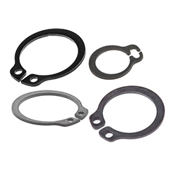

Circlips, also known as retaining rings or snap rings, are metal fasteners used to securely position and hold components—such as bearings or gears—onto a shaft or inside a housing. They fit into machined grooves and prevent lateral movement, providing a compact and reliable alternative to traditional fasteners.
Main Functions
Retain components on shafts or in bores
Provide axial location without additional hardware
Prevent unwanted movement or disassembly
Reduce weight and assembly time compared to bolts or nuts
Home appliances (washing machines, blenders, fans)
Aerospace and defense systems
Construction machinery and power tools
Hydraulic and pneumatic cylinders
Types of Circlips
Internal Circlips: Installed inside a bore to hold components in place
External Circlips: Fitted around a shaft to secure parts
E-Clips: Easy-to-install clips for shafts without grooves
Snap Rings: General term for both internal and external circlips
Spiral Retaining Rings: No ears or gaps, ideal for precise balance and compact applications
Internal Circlips

External Circlips
E-Clips
Snap Rings
Spiral Retaining Rings
Materials Used
Carbon Spring Steel: Standard material with high tensile strength
Stainless Steel: Corrosion-resistant for outdoor or chemical applications
Beryllium Copper: Non-magnetic and highly conductive
Phosphor Bronze: Good wear resistance and electrical conductivity
Selection Criteria
To choose the correct circlip, consider:
Shaft or bore diameter and groove size
Radial and axial loads
Operating temperature and environment
Material compatibility with adjacent components
Ease of installation and removal requirements
Installation and Tools
Circlips are typically installed using specialized pliers known as **circlip pliers** or **snap ring pliers**. Internal and external pliers differ in their jaw orientation:
**External Circlip Pliers** – Used to expand the circlip for shaft fitting
**Internal Circlip Pliers** – Used to compress the circlip for bore fitting
Some circlips can also be installed with fingers or simple tools in low-load applications.
Common Issues and Failures
Incorrect groove size or tolerance leading to loosening
Overstretching or deformation during installation
Fatigue due to vibration or cyclic loading
Corrosion in harsh environments
Loss of preload or axial movement under high pressure
Advantages of Circlips
Simple and cost-effective retaining solution
Compact and lightweight compared to bolts or flanges
Quick installation and removal with proper tools
Available in a wide range of sizes and materials
Reduce component count and simplify designs
Conclusion
Circlips are essential retaining elements used across industries to secure mechanical parts on shafts and inside housings. Their simple design, low cost, and effective performance make them a preferred choice in both high-volume manufacturing and heavy-duty applications. Choosing the right circlip ensures safe, long-lasting, and efficient machine performance.